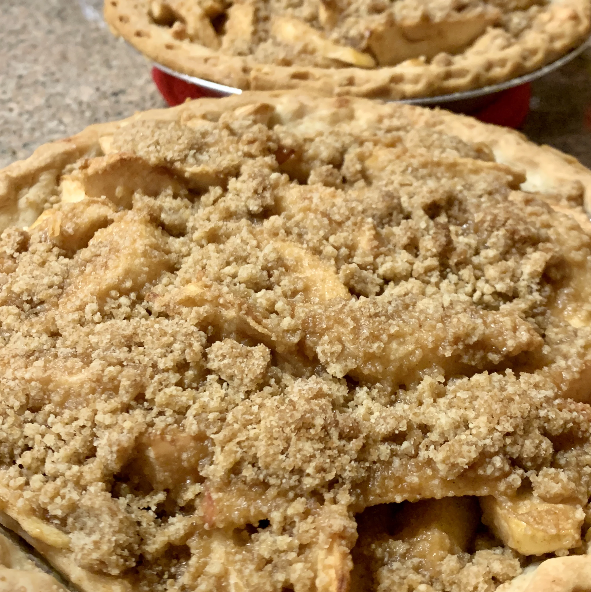

Apple Crumb Pie

Description
Our favorite recipe for making a classic apple pie from scratch. This recipe guarantees apple pie with perfectly cooked (not mushy) apples
surrounded by a thickened and gently spiced sauce all baked inside a flaky, golden-brown crust.
Ingrediets
- 1 (9 inch) pie shell
- 6 cups thinly sliced apples
- 1 tablespoon lemon juice (Optional)
- ¾ cup white sugar
- 2 tablespoons all-purpose flour
- ½ teaspoon ground cinnamon
- ⅛ teaspoon ground nutmeg
- ½ cup raisins (Optional)
- ½ cup chopped walnuts (Optional)
- ½ cup all-purpose flour
- ½ cup packed brown sugar
- 3 tablespoons butter
Steps
- Preheat oven to 375 degrees F (190 degrees C).
- Place sliced apples in a large bowl; sprinkle with lemon juice, if desired. In a small bowl, mix together white sugar, 2 tablespoons flour,
cinnamon, and nutmeg. Sprinkle mixture over apples and toss until apple slices are evenly coated. Stir in raisins and walnuts (optional).
Transfer mixture into pastry shell.
- In a small bowl ,mix together 1/2 cup flour and brown sugar. Cut in butter or margarine until mixture is crumbly.
Sprinkle mixture over apple filling. Cover top loosely with aluminum foil.
- Bake in preheated oven for 25 minutes. Remove foil and bake an additional 25 to 30 minutes, until top is golden brown and filling is bubbly.
Cool on a wire rack.
Return home